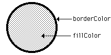

| drawfill | graphics procedure |
| Syntax | drawfill (x, y : int, fillColor, borderColor : int)
|
| Description | The drawfill procedure is used to color in a figure that is on the screen. Starting at (x, y), the figure is filled with fillColor to a surrounding border whose color is borderColor.
 |
| Example | This program draws an oval with x and y radius of 10 in the center of the screen using color 1. Then the oval is filled with color 2. The maxx and maxy functions are used to determine the maximum x and y values on the screen.
setscreen ("graphics")
const midx := maxx div 2
const midy := maxy div 2
drawoval (midx, midy, 10, 10, 1)
drawfill (midx, midy, 2, 1)
|
| Execute | |
| Details | The meaning of the Color number depends on the current palette; see the palette statement. The screen should be in a "graphics" mode. See the setscreen procedure for details. If the screen is not in a "graphics" mode, it will automatically be set to "graphics" mode. Warning: In Turing for IBM PC compatibles, drawfill fails to completely fill in some complicated figures that contain "islands" within them surrounded by the borderColor.
|
| See also | setscreen, maxx, maxy and the various draw… procedures.
|